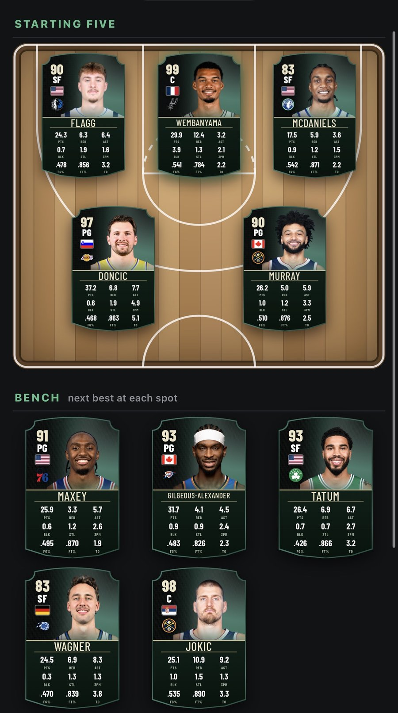
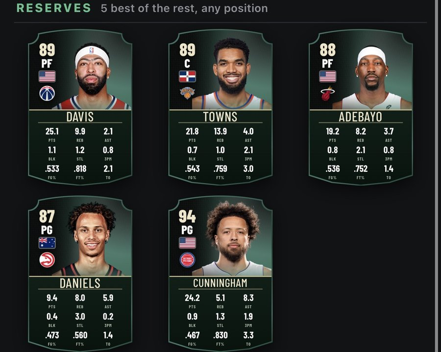

Benched of the Month
Luka Doncic
Dimes Square SK · Fri, Oct 30
37 pts · 7 reb · 5 ast · 6 threes
On the bench. Dimes lost that week 3-6 to Mastika.
Five weeks, five wins. Never lost threes or FT% in a matchup (5-0 in both). 31-13-1 against the league, best in Swish. Tyrese Maxey: 415 points. The weak spot: FG%, 2-3 in matchups.
The best team nobody talks about: 30-14-1 against the league, second only to Mastika. Won STL, BLK, FG% and TO in four of five matchups. Cooper Flagg: 389 points, 30 steals.
Most points (3,855) and most threes (478) in the league. Undefeated in threes (5-0). Cade scored 52 against Cubuklu. Weakness: assists and steals, 1-4 in both.
Started 0-2, then three straight wins. Wemby is the player of the month: 508 points, 210 rebounds, 66 blocks. Fewest turnovers in the league (401).
901 points in week 3, the best week by anyone. Perfect in FT% (5-0). Jokic: 376 points, 164 rebounds, 138 assists. Zero matchup wins in blocks (0-5).
Went 9-0 and 9-0 against the league in weeks 1 and 2, then 0-9 and 1-8 in weeks 4 and 5. Second in rebounds, tied for the best FG% (.475). KAT: 222 rebounds.
0-5, and the unluckiest team in the league: three straight 4-5 losses and a 17-28 all-play that says they should have two or three wins. Most rebounds, assists and turnovers.
Luka scored 53, 52 and 45 in a month. Anthony Davis: 402 points, 159 rebounds. Fewest assists (618) and rebounds (1,099).
Five-for-five in assists, zero-for-five in blocks and turnovers. Jamal Murray is BBM's No. 4 player of the month. 78 blocks all season, 38 fewer than anyone.
1-4 with the most blocks in the league (171). Lost FT% by less than .004 three weeks running, two of them 4-5 losses. SGA: 507 points. Fewest steals (172).


| PTS | 3PM | REB | AST | STL | BLK | FG% | FT% | TO | ||
|---|---|---|---|---|---|---|---|---|---|---|
| 1 | Mastika Magics | 2 | 3 | 5 | 5 | 6 | 6 | 9 | 1 | 5 |
| 2 | Besiktas Sompo Japan | 3 | 6 | 3 | 4 | 2 | 2 | 2 | 8 | 7 |
| 3 | Chicago Belediyespor | 1 | 1 | 6 | 7 | 8 | 5 | 8 | 5 | 4 |
| 4 | Tralala Cafe Crown | 5 | 2 | 9 | 9 | 7 | 4 | 10 | 6 | 1 |
| 5 | Trakya Blazers | 8 | 8 | 7 | 3 | 1 | 9 | 3 | 2 | 3 |
| 6 | Cubuklu Fireballs | 9 | 7 | 2 | 8 | 4 | 2 | 1 | 10 | 6 |
| 7 | King of New York | 10 | 9 | 1 | 1 | 3 | 8 | 7 | 9 | 10 |
| 8 | Dimes Square SK | 6 | 3 | 10 | 10 | 5 | 7 | 6 | 4 | 2 |
| 9 | LeTakim | 4 | 5 | 8 | 2 | 9 | 10 | 4 | 7 | 9 |
| 10 | Brookline Belediyespor | 7 | 10 | 4 | 6 | 10 | 1 | 5 | 3 | 8 |
| Team | PTS | 3PM | REB | AST | STL | BLK | FG% | FT% | TO |
|---|---|---|---|---|---|---|---|---|---|
| Chicago Belediyespor | 3,855 | 478 | 1,226 | 763 | 218 | 141 | .462 | .797 | 447 |
| Mastika Magics | 3,682 | 397 | 1,236 | 857 | 227 | 140 | .462 | .847 | 456 |
| Besiktas Sompo Japan | 3,664 | 361 | 1,296 | 860 | 254 | 165 | .475 | .772 | 463 |
| LeTakim | 3,560 | 372 | 1,140 | 1,041 | 189 | 78 | .471 | .779 | 493 |
| Tralala Cafe Crown | 3,511 | 436 | 1,127 | 680 | 225 | 162 | .452 | .786 | 401 |
| Dimes Square SK | 3,478 | 397 | 1,099 | 618 | 228 | 133 | .464 | .801 | 414 |
| Brookline Belediyespor | 3,469 | 313 | 1,285 | 782 | 172 | 171 | .471 | .802 | 483 |
| Trakya Blazers | 3,463 | 338 | 1,189 | 871 | 262 | 116 | .473 | .815 | 421 |
| Cubuklu Fireballs | 3,433 | 345 | 1,383 | 719 | 248 | 165 | .475 | .753 | 460 |
| King of New York | 3,239 | 324 | 1,464 | 1,130 | 253 | 123 | .462 | .753 | 495 |
Green = best in the league · red = worst. TO counts against you.
On the bench. Dimes lost that week 3-6 to Mastika.
The unbeaten team benched a near triple-double and won anyway. Rich people problems.
Tyler Herro also scored 27 on the bench on Nov 11. LeTakim are 2-3.
| Team | Games | PTS | 3PM | REB | Best game on the bench |
|---|---|---|---|---|---|
| LeTakim | 12 | 205 | 16 | 42 | Julius Randle · 33 pts · Nov 16 |
| Dimes Square SK | 16 | 179 | 19 | 67 | Luka Doncic · 37 pts · Oct 30 |
| Brookline Belediyespor | 11 | 153 | 25 | 58 | Cameron Boozer · 29 pts · Nov 16 |
| Mastika Magics | 12 | 116 | 8 | 79 | Joel Embiid · 26 pts · Nov 21 |
| Besiktas Sompo Japan | 8 | 105 | 13 | 26 | Kyshawn George · 25 pts · Nov 4 |
| Trakya Blazers | 6 | 81 | 11 | 23 | Collin Murray-Boyles · 18 pts · Nov 2 |
| Tralala Cafe Crown | 8 | 80 | 6 | 32 | Derik Queen · 20 pts · Nov 4 |
| Chicago Belediyespor | 6 | 78 | 6 | 35 | P.J. Washington · 21 pts · Nov 4 |
| King of New York | 8 | 67 | 7 | 26 | Davion Mitchell · 15 pts · Nov 2 |
| Cubuklu Fireballs | 4 | 57 | 9 | 14 | Zach LaVine · 23 pts · Nov 2 |